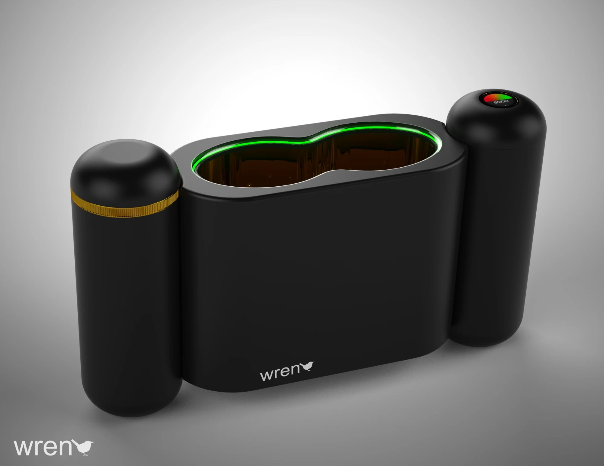
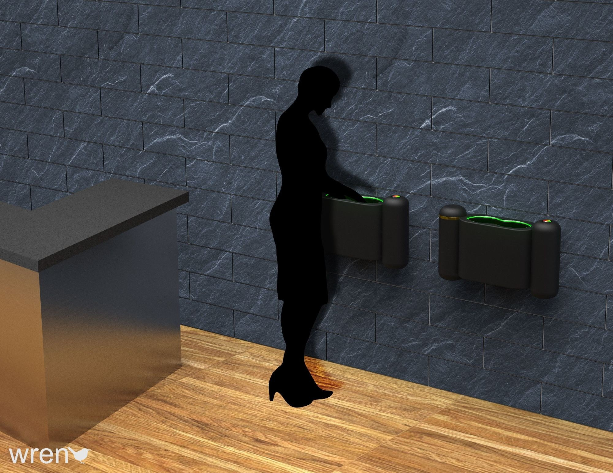
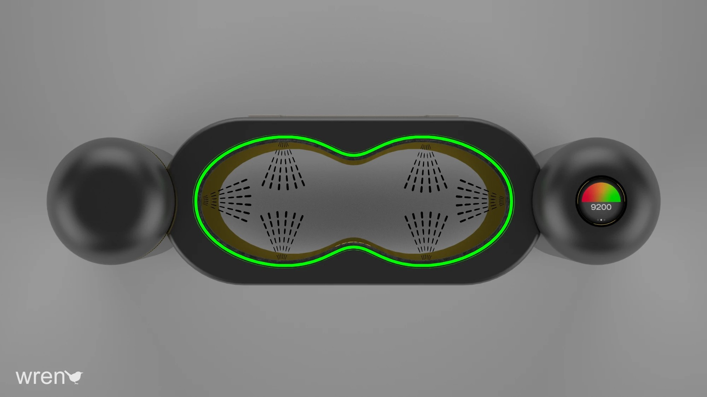
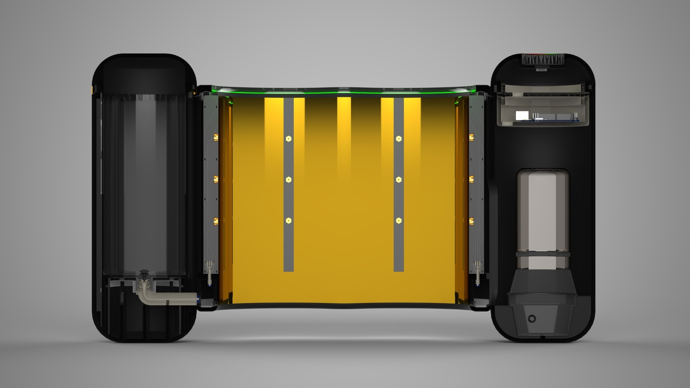
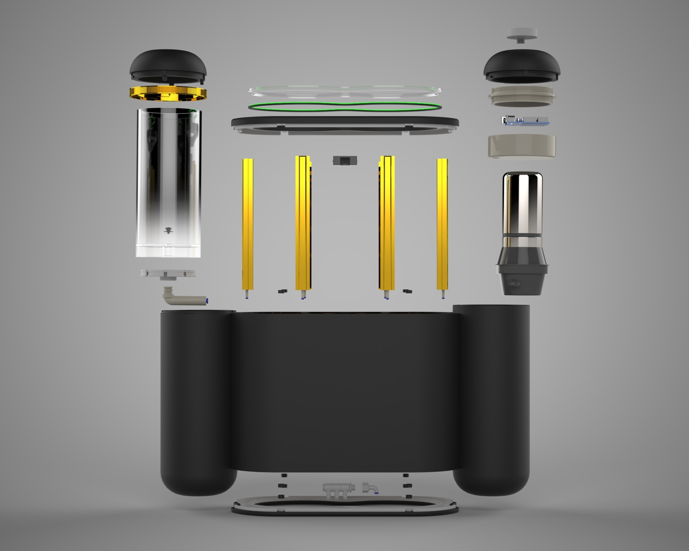

The Wren is a touchless sanitation solution designed for use in restaurants, retail shops, and schools. It enables visitors to sanitize their hands quickly and safely, minimizing the spread of germs. Featuring a sleek, durable design, the Wren combines functionality with elegance to promote hygiene in high-traffic environments.
Interface Touchless
Nozzles 18
Reservoir Dishwasher-safe
Scents Customizable

Inspiration
Many stores have adopted hand sanitizer stations for customers entering their establishments, which, while effective, often lack aesthetic appeal, environmental sustainability, and long-term practicality. The COVID-19 crisis heightened public awareness of the risks associated with viral illnesses, emphasizing the need for thoughtful hygiene solutions.
I also drew inspiration from Turkey's tradition of offering kolonya, a fragrant disinfectant, to guests upon arrival. Building on these influences, the Wren was conceived as a contactless, low-waste, and elegant solution. It features customizable integrated scents, allowing owners to tailor the experience to their preferences.

In use · wall-mounted installation
How It Works
Upon entering, a guest places their hands into the top of the Wren, which activates via motion sensors to begin the sanitizing process. The Wren utilizes 18 strategically positioned nozzles to dispense a fine mist of scented sanitizing solution. As the low-viscosity alcohol solution passes through the system, it draws essential oils from the scent reservoir, creating a pleasant and refreshing experience. When the sanitization cycle is complete, an LED light turns green, signaling that the guest's hands are fully sanitized.
The Wren is designed for easy maintenance: the plumbing components are accessed by removing the base, and the nozzle assemblies can be detached from the top for servicing. Additionally, a touch display on the right side provides helpful insights, such as when to refill the solution and usage statistics, including the number of customers served over a selected time period.

Top view · nozzle spray pattern and touch display

Section · internal layout
Design Process
The design process for the Wren began with rough sketches on scrap paper, which formed the basis for initial CAD models to define the product's general form and dimensions. These early explorations provided insights that led to system schematics, focusing on how the components could work together seamlessly while enhancing aesthetics.
As the design progressed, the critical components were integrated back into CAD, and attention shifted to refining individual parts to emphasize compactness, usability, and ease of maintenance. The final step ensured that all components worked harmoniously to deliver an intuitive and seamless user experience. The name Wren was inspired by the symbolism of the songbird, representing responsibility and community, aligning perfectly with the product's mission to promote public health and hygiene.

Exploded view
How It Is Different
The Wren stands out as a hand sanitation solution designed to elevate the user experience, unlike traditional options. Common alternatives, such as plastic bottles of gel sanitizer or foam dispensers, often result in floor residue, excessive single-use plastic waste, and frequently touched dispensing surfaces.
The Wren addresses these shortcomings with a light mist that evaporates quickly, a reusable and dishwasher-safe sanitation reservoir, a completely contact-free interface, and a durable, elegant design that prioritizes both functionality and aesthetics.
Future Plans
As this project evolves, my focus will shift toward refining the design for manufacturing and assembly through the construction of a functional prototype. By iterating on the prototype's components, the Wren can progress toward readiness for full-scale manufacturing.
Lessons Learned
I have always enjoyed finding solutions to both new and existing problems, and this product presented another opportunity to turn an idea into a solution. Iteration is essential in product design, as the initial concept is rarely the final destination. It's important to embrace change and remain open to evolving ideas, rather than becoming overly attached to one approach.
Wren began as a simple sketch but evolved because there was room for improvement. The key is not settling for the first solution, but continually striving for something better.
V2
Version 2
The Wren was further refined as part of a project in my Design for Manufacturability and Assembly class. By focusing on essential features, the design was optimized for large-scale injection molding. The pump and reservoir were integrated into the right side, reducing tubing and streamlining the plastic molds.
The reservoir was made transparent, allowing for easy fluid level monitoring and eliminating the need for the display featured in Version 1. Additionally, the number of nozzles was reduced by a factor of three, enabling a slimmer hand sanitizing port.